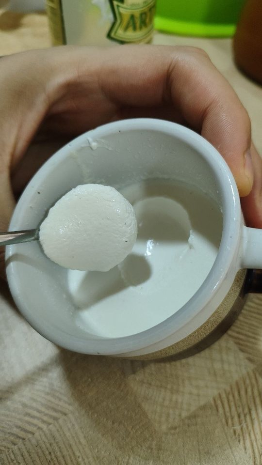

Сливки 20 % заквасил своей перечной культурой, оставил при комнатной температуре, потом убрал в холодильник. Задумывалась сметана — вышло плотнее: ложка поднимает гладкий шар, при наклоне чашки масса не течёт.

Без процеживания, соли и загустителей — только сливки и закваска.
20 %сливки, без стабилизаторов
1 ч. л.закваски на 100 мл
22–24 °Cна столе, ≈6 часов
ночьв холодильнике
На вкус
«Что-то среднее между сметаной и крем-сыром. Чистый молочный вкус без примесей — и при этом свой, который сложно описать. Небольшая кислинка». — жена, не зная, что пробует
кислота 2/5
сливочность 4/5
аромат 4/5
общая 5/5
Это не йогурт и не станет им: с перца приходят «комнатные» бактерии — те же, что делают сметану и крем-сыр. Из молока у них получается простокваша, из сливок — вот это.
Путь до этой чашки
9 сентября
Перцы в тёплом молоке на двое суток. Расслоилось, перцы начали портиться — но культура завелась.
13 сентября
Та же культура в правильном режиме: прогретое молоко, покой. Сгусток за 8 часов, режется.
14 сентября
Две одинаковые банки, 28 °C против комнатной. Комнатная выиграла: вдвое меньше сыворотки, сливочнее.
15 сентября
Закваска в сливки 20 %. Крем-сыр.
Пошаговый рецепт — во вкладке «Как повторить». Почему всё так работает и что пошло не так по дороге — в «Подробно».
Как повторить
Две части: сначала вырастить закваску — три поколения, по дню на каждое, — потом заквасить ею сливки.
Что нужно
Острый перец с зелёными хвостиками — с рынка, не мытый
Молоко, любое: домашнее тоже годится, оно будет прогрето
Сливки 20 % для крем-сыра, в составе только сливки
Термометр для молока, маленькая чашка, пищевая плёнка
Три правила
🔥Молоко и сливки всегда прогревать: 85 °C десять минут, потом остудить до ≈30 °C — тёплое, не горячее.
🚫Первые два поколения не пробовать. Есть можно с третьего.
👃Пахнет не кисломолочным, пузырится, плёнка сверху — вылить. Сомневаешься — тоже вылить.
Часть 1 — закваска
1
Поколение 1
Хвостики в ложку молока
🌡 25–30 °C, тёплое место⏱ сутки-двое5 хвостиков · 2 ст. л. молока
Прогреть молоко, остудить до ≈30 °C, налить 2 столовые ложки в маленькую чашку. Положить 5 хвостиков с зелёной шапочкой. Через 2–3 часа хвостики вынуть, чашку затянуть плёнкой и поставить в тёплое место: тёплая кухня, у батареи, выключенная духовка с лампочкой.
Готово, когда закисло — пахнет простоквашей. Первое поколение не густеет, а расслаивается на хлопья и сыворотку: так и должно быть.
2
Поколение 2
Ложка на стакан
🌡 22–24 °C, на столе⏱ 6–12 часов1 ч. л. на 100 мл
Первую чашку размешать. Чайную ложку из неё — в 100 мл прогретого и остуженного молока, размешать один раз, затянуть плёнкой. Оставить на столе и не трогать.
Готово, когда при наклоне масса отходит от стенки одним куском. Тогда — в холодильник.
3
Поколение 3
Ещё раз то же самое
🌡 22–24 °C⏱ 6–12 часов1 ч. л. на 100 мл
Чайная ложка из второй чашки — в новые 100 мл. Схватилось за день и пахнет чистой простоквашей — закваска готова. Отсюда её можно есть и вести дальше: ложка из последней чашки в свежее молоко, и так сколько угодно.
Часть 2 — крем-сыр
🌡 22–24 °C, на столе⏱ 6–12 часов + ночь в холодильнике1 ч. л. закваски на 100 мл сливок
Сливки 20 %, в составе только сливки. Прогреть 85 °C десять минут, остудить до ≈30 °C.
Чайная ложка закваски на каждые 100 мл. Размешать один раз, затянуть плёнкой.
Оставить на столе на 6–12 часов, не трогать. Готово, когда при наклоне масса не течёт.
В холодильник на ночь — там она станет плотной. Утром — крем-сыр.
Чтобы мазался: откинуть на марлю на 2–3 часа и посолить — щепотка на 100 г. Хочешь сметану: не процеживать, а размешать ложкой и вернуть в холод.
Быстрее — при 28 °C в водяной бане: 4–8 часов, но сыворотки будет вдвое больше. Остальные тонкости — во вкладке «Подробно».
Дневник опытов
Восемь банок по порядку. Метод один: менять по одной переменной за раз и записывать всё, что померилось. Провалы здесь на тех же правах, что и удачи, — они объясняют больше.
Названия: П — линия на одних хвостиках, СЗ — линия от первой миски («старая закваска»). Цифра — поколение.
ПровалНачало линии СЗ
Опыт 0 · миска с перцами
9 сентября · домашнее молоко · около 600 мл
Вопрос: сквасит ли перец молоко вообще?
Что положил
целые острые перцы и их шляпки, прямо в молоко
Режим
молоко нагрето до 45 °C, без прогрева; двое суток в тепле
Что вышло
загустело, потом отошла сыворотка, перцы начали портиться
Вывод: перец сквашивает молоко — но целые плоды в тепле портятся раньше, чем встанет сгусток, а без прогрева гель слабый. Ложку из этой миски я сохранил, и именно из неё пошла вся рабочая линия СЗ.
Фото банки не сохранилось — только видео для ролика.
Предкультура
П-1 · плодоножки в 15 мл молока
13 сентября, 18:37 · домашнее молоко · 15 мл
Вопрос: заведётся ли культура с одних хвостиков, без мякоти перца?
Источник
5 плодоножек с чашелистиками, с рынка
Прогрев
84 °C · 10 мин → 29 °C, +3 % сухого молока
Режим
хвостики 2–3 ч, вынуты; 28 °C, ночью до 24
Через 18 ч 47 мин
не гель, а белые хлопья в желтоватой сыворотке; запах чисто кисломолочный
Вывод: для предкультуры это норма. Без посева на 15 мл гель и не должен встать; расслоение при чистом запахе значит, что клетки наработались. Задача банки выполнена.
УспехКонтроль
СЗ-1 · старая закваска в правильном режиме
13 сентября, 18:37 · домашнее молоко · 100 мл
Вопрос: прошлая партия расслоилась — дело в культуре или в протоколе?
Прогрев
85 °C · 10 мин → 29 °C
Посев
5 % шприцем, из середины размешанной закваски
Режим
28 °C, полный покой
Сгусток
≤ 8,3 ч — в 2:55 уже стоял
Разрез
держит; ложка поднимает цельный кусок
Сыворотка
10 мл на 100
Вкус
простокваша, не йогурт; нота «перец, долго лежавший в тёплой воде»
Вывод: культура жива и сильна, виноват был протокол. Сыворотка — от того, что молоко не обогащали; перечная нота — вопрос к следующему пересеву.
Провал
П-2 · перечная линия, второе поколение
14 сентября, 20:55 · домашнее молоко · 100 мл
Вопрос: линия с хвостиков сильнее или слабее старой закваски? Обе банки — из одной порции молока, в одной бане.
Посев
5 % из П-1, отдельным шприцем
Режим
85 °C · 10 мин → 29 °C; 28 °C
Через 3 ч 45 мин
совсем жидкая
Через 18 ч
сгусток есть, но вся масса в мелких пузырьках, ломается пористыми кусками, много сыворотки
Запах
странный, не только кисломолочный
Вывод: газ выделяет кто-то посторонний — с плодоножки приходят не только молочнокислые бактерии, а медленный старт первого поколения дал им фору. Правило простое: сомневаешься — выливай. Вылил, линию закрыл. Перезапуск — только со свежих хвостиков и сразу двумя банками.
УспехЭталон
СЗ-2 · эталон серии
14 сентября, 20:55 · домашнее молоко · 100 мл
Вопрос: повторится ли результат СЗ-1? Точка отсчёта для двух других банок серии.
Посев
5 % из СЗ-1
Режим
85 °C · 10 мин → 29 °C; 28 °C
Сгусток
3,75–5,8 ч
Разрез
держит — ложка поднимает кубик с ровными гранями, самый плотный срез серии
Сыворотка
≈ 10 мл на 100
Вкус
простокваша с текстурой йогурта; перечная нота ушла полностью
Вывод: линия стабильна: второй раз подряд сгусток быстрее чем за 8 часов. Из этой банки сеялась вся серия 3.
УспехПобедитель серии 2
СЗ-2-холод · та же культура при 22–24 °C
14 сентября, 20:55 · домашнее молоко · 100 мл
Вопрос: станет ли вкус сливочнее, если сквашивать прохладнее? От СЗ-2 отличается только температурой.
Режим
то же молоко и посев; на столе, 22–24 °C, не в бане
К утру
гладкий глянцевый сгусток без пузырей; держит форму, но мягче СЗ-2
Сыворотка
≈ 5 мл — вдвое меньше, чем у СЗ-2
Запах
лучший из трёх: не резкий, простокваша со сметанной ноткой
Вывод: прохлада выиграла по сыворотке и аромату. Следующие поколения — при комнатной температуре. Цена — время: сгусток идёт дольше, чем 4–6 часов при 28.
Вопрос: даст ли томление карамельный вкус и плотность?
Томление
1 л молока 3–4 часа в кастрюле → осталось 200 мл. По плану — на треть, вышло в 5 раз
Посев
5 % из СЗ-2; 22–24 °C
Через 16 ч
загустело только до консистенции сливок; при наклоне течёт
Вкус
кисло, сладко и солёно одновременно — очень концентрированно
Вывод: перебор с упариванием. Белки и соли молока гасят кислоту, а в пятикратном концентрате их в разы больше — бактерии работали, но до сгустка не дотянули. Солёный вкус — это те же соли молока: в обычном их около 0,7 %, здесь около 3,5 %. Упаривать не больше чем на треть.
УспехГлавный результат
СЗ-3-сливки · задумывалась сметана, вышел крем-сыр
Вопрос: получится ли из закваски настоящая сметана? Сливки для этой культуры — родной продукт.
Прогрев
85 °C · 10 мин → 29 °C
Посев
5 % из СЗ-2; 22–24 °C, плёнка
Сгусток
примерно за 4–6 ч, потом в холодильник на ночь (момент по памяти, не по часам)
Наутро
очень плотная: ложка поднимает гладкий шар, при наклоне не течёт, пузырей нет
Вкус
крем-сыр — между сметаной и творожным сыром; чистый молочный вкус, небольшая кислинка, свой оттенок
Оценки
кислота 2 · сливочность 4 · аромат 4 · общая 5
Вывод: лучший продукт линии. Подробно — на вкладке «Результат».
Дальше по плану: закваска для сметаны и крем-сыра как отдельный ролик, смеси со сливками и повтор перечной линии двумя банками. Новые банки будут появляться здесь же.
Подробно
Всё, что не влезло в короткий рецепт: температуры, признаки готовности, безопасность и ошибки, которые уже сделаны.
Температуры и время
Что
Температура
Сколько ждать
Поколение 1
тепло, 25–30 °C
сутки-двое, пока не закиснет
Поколения 2–3
комнатная 22–24 °C
6–12 часов
Те же, но 28 °C
водяная баня
4–8 часов — быстрее, но сыворотки вдвое больше
Крем-сыр на сливках
комнатная 22–24 °C
6–12 часов, потом ночь в холодильнике
Часы — ориентир, а не правило. Готовность проверять наклоном: масса отходит от стенки одним куском. Ложкой в это время не лезть: сетка рвётся, и потом отходит лишняя сыворотка. Плотность добирается на холоде, поэтому судить только после холодильника.
Прогрев — 85 °C десять минут, не «довести до 85». Термометр в молоке, не в воде. Остудить до 29–30 °C: горячее убьёт закваску, а 37–40 °C — температура, при которой выигрывают посторонние. Молоко из пакета долгого хранения достаточно нагреть до тёплого.
Доза закваски — 5 %: чайная ложка на 100 мл, столовая на 300. Больше не нужно, меньше — дольше ждать.
Безопасность
Прогревать всегда. В сыром домашнем молоке бывает бруцеллёз, и кислота убивает его не сразу.
Первые два поколения не пробовать. С хвостика приходят не только полезные бактерии; кислота вытесняет посторонних постепенно.
Выливать не пробуя: пузыри и вздутие, плёнка, цветные точки, пушок, запах дрожжей, сидра, капусты или гнили, горечь без кислого запаха.
Беременным, маленьким детям и людям со слабым иммунитетом — покупная закваска, а не дикая.
Ставь две банки с разных перцев. Одна может уйти в газ, как моя П-2, и линия не пропадёт.
Почему крем-сыр, а не йогурт
С хвостика перца в молоко приходят «комнатные» молочнокислые бактерии — лактококки, лейконостоки, вайселлы. Это та же группа, которой на производстве заквашивают сметану, пахту и крем-сыр. Йогуртовый вкус дают другие бактерии, которым нужно 42–45 °C; у этой культуры их нет, и никакой температурой их не вырастить. Из молока получается простокваша, из сливок — сметана и крем-сыр.
Плотность сложилась из трёх вещей: жир сливок, прогрев 85 °C десять минут и медленное сквашивание при комнатной температуре. В серии 2 та же культура при 28 °C отдала вдвое больше сыворотки, чем при 22–24 °C, — этот результат и задал режим.
Промышленный крем-сыр делают почти так же — сливки плюс такие же бактерии, — только потом отделяют сыворотку, взбивают горячим и добавляют соль и стабилизаторы. Новое здесь не рецепт, а закваска: дикое сообщество с плодоножки перца со своим оттенком вкуса.
Сметана или крем-сыр — одна закваска, разный финал
Сметана
Сливки 20 %, прогреть, остудить до 24 °C, 5 % закваски. Накрыть неплотно — аромату нужен воздух. 20–22 °C, снимать при отчётливой кислинке. Размешать 10–15 секунд, в холодильник на 12–24 часа. Не солить.
Крем-сыр
То же, но плёнка внатяг и полный покой до плотного сгустка. Холодильник на ночь, потом процедить 2–3 часа, посолить щепоткой на 100 г и взбить холодным. Хранится 3–5 дней.
Размешивание не делает плотнее. Кислотный сгусток ломается один раз и заново не собирается: чем дольше мешаешь, тем жиже. Плотность берётся из жира, кислоты и холода. Жирные сливки к тому же можно сбить в масло — мешать ложкой и коротко.
Ошибки, которые уже сделаны
Целые перцы на двое суток в тёплом молоке — расслоилось, перцы начали портиться. Работают хвостики, и через 2–3 часа их вынимают.
Не прогретое молоко и банка, которую трогали в момент схватывания, — первая партия разъехалась в сыворотку. Та же культура в правильном режиме встала за 8 часов.
45 °C для перечной культуры — слишком тепло: эти бактерии любят 28–30, а при 37–40 выигрывают посторонние.
Топлёное молоко, упаренное в 5 раз — не схватилось за сутки, а вкус вышел кисло-сладко-солёный: соли молока сконцентрировались вместе с сахаром. Упаривать не больше чем на треть.
Взбивать, чтобы стало плотнее — стало жиже.
Что записывать
Без записей опыты не сравниваются. На каждую банку: молоко и объём, прогрев, температура, доля закваски, время постановки, час, когда встал сгусток, сколько мл сыворотки отошло, держит ли стенка разрез, запах, вкус. Я веду это в Obsidian — из этих заметок и собран сайт.